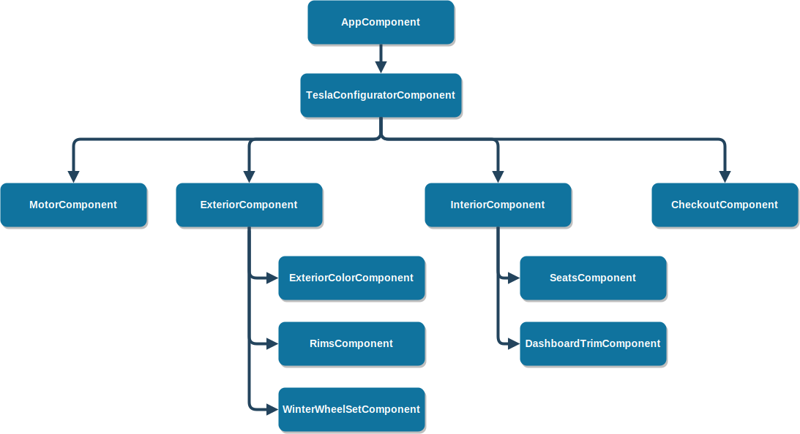
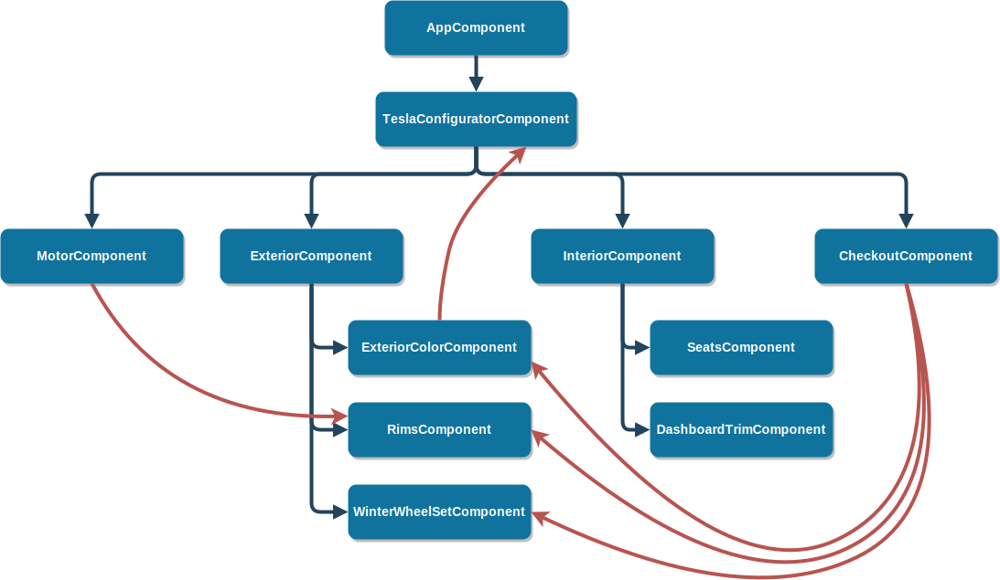
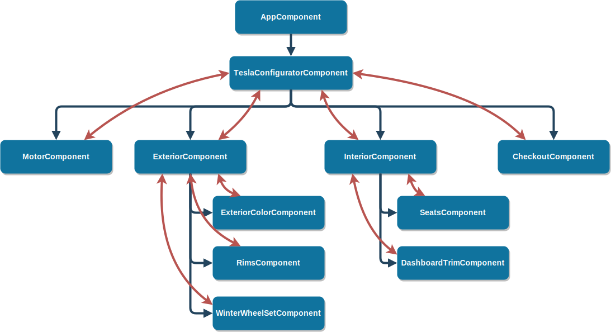
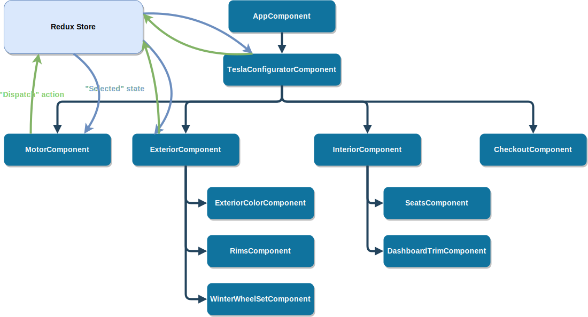
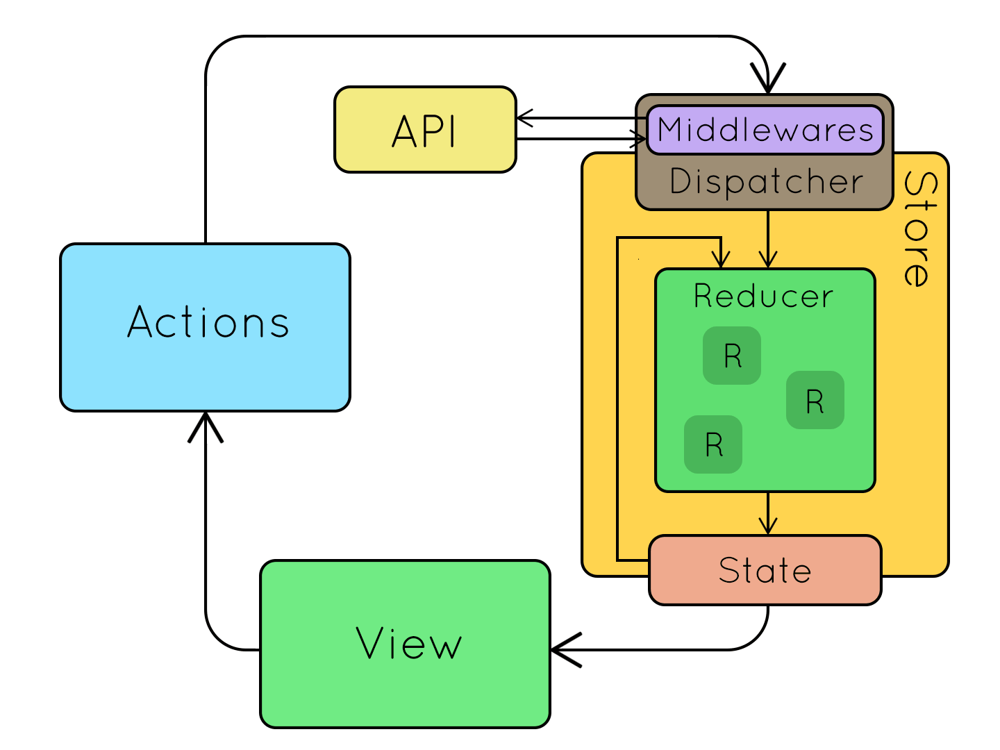

Angular & Redux
with angular-redux
about:me
Jean-Christophe Puja (JC)
Alsace 🥨
@bluesky
8+ years of fullstack
2 projects in prod with Angular + Redux
What we'll see
Why Redux?
Redux building blocks
Redux + Angular
Managing side-effects with Epics
Why Redux?
Your app has state.
State is usually shared...
...across the app.
Ad-hoc?
Bucket brigade?
The Redux idea
Redux building blocks
State
Actions
"Reducer" functions
State
const state = {
colors: {
'red': {
price: 2100.00,
name: 'Red Multi-Coat'
},
'blue': {
price: 1500.00,
name: 'Midnight Blue'
}
},
selectedColor: 'red',
winterWheelsSelected: false,
trailerHitchSelected: false
};Accessed via the Redux store
Immutable & normalized
Actions
const colorSelectedAction = {
type: 'COLOR_SELECTED',
payload: {
color: 'blue'
}
};Type, maybe Payload
Dispatched to the Redux store
Reducer functions
function reducer(state, action) {
switch (action.type) {
case 'COLOR_SELECTED':
return {
...state,
selectedColor: action.payload.color
};
// Other actions...
}
}Pure functions (no side-effects)
Executed by the Redux Store
Recap

Redux + Angular

Created in the React.js world
Framework agnostic
Angular connector: angular-redux
Angular implementation: ngrx/store
👎 Not Redux, own implementation
👍 Fairly popular
Give it a try!
Demo
💻
Managing side-effects with Epics
Async actions
function asyncAction() {
ngRedux.dispatch(fetchStart());
http.get('http://url/foobar')
.subscribe(
result => ngRedux.dispatch(fetchSuccess(result)),
error => ngRedux.dispatch(fetchError(error))
);
}Hard to test
Don't scale well
Hard to combine
"Epics": Actions in, actions out.
const pingEpic = action$ => action$.pipe(
filter(action => action.type === 'PING'),
delay(1000), // Simulation of async work
mapTo({ type: 'PONG' })
);Declarative
Isolate side-effects
Use the power of Observables
Data flow with Epics
Demo (again)
💻
References
Analysis of state management in Angular: https://blog.oasisdigital.com/2016/managing-state-angular-2/
Redux docs & tutorial: https://redux.js.org/docs/introduction/
Flux Standard Actions, a good convention for Action structure: https://github.com/redux-utilities/flux-standard-action
angular-redux tutorial: https://github.com/angular-redux/store/blob/master/articles/intro-tutorial.md
Redux-observable: https://redux-observable.js.org/
Data flow diagrams: https://github.com/reactjs/redux/issues/653